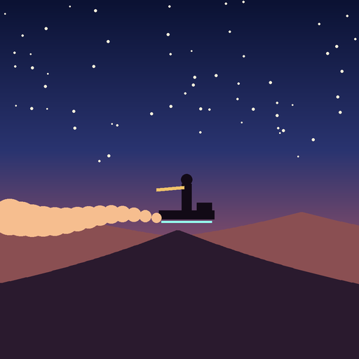

Glasswind
Ride, jump and wander.
Ride a hover bike across a quiet desert basin. Fly over dunes, find old ruins and a hidden oasis, and jump off the cliffs at the Dry Falls. Nothing can hurt you and the bike always comes when you call. This is an early test: the world is simple shapes while the riding gets tuned, and the rider is the real character.
Version 0.1.1. Release notes · Backlog


What kind of game is this?
Things to do
- Ride out from Home Camp and find five places: the Leaning Tower, the Buried Ship, the Dry Falls, the Oasis and the Nomad Camp.
- Ride up the long ramp on the south side of the Dry Falls and jump off the top.
- Get off and walk anywhere. Call the bike back from anywhere with one button.
- Earn Big Air, Shipwright and Oasis. Seven more achievements arrive in later releases.
Controls
WASD walks, or steers and goes on the bike. Space jumps. Q gets on or off the bike, or calls it. Shift boosts. Arrows or the mouse turn the camera. Esc opens the Menu.
Left stick walks or steers. Right stick turns the camera. RT goes and LT brakes. A jumps. B gets on or off the bike, or calls it. LB boosts. Menu or View opens the Menu.
Drag on the left side to walk. On the bike, drag up to go and sideways to steer. Drag on the right side to look. Bike, Jump and Boost buttons on the right. Settings > Auto accelerate rides with one thumb.
Play with an Xbox controller
Any Xbox Wireless Controller with Bluetooth works. That is every Series X|S controller and the Xbox One controllers made since 2016. If the plastic around the Xbox button matches the face of the controller, it has Bluetooth. Other controllers that your phone or browser sees as a standard gamepad use the same buttons.
- Hold the Xbox button to turn the controller on.
- Hold the small Pair button on top for 3 seconds, until the Xbox button flashes fast.
- On your phone, open Settings, then Connected devices, then Pair new device.
- Tap Xbox Wireless Controller. The Xbox button stays lit when it is connected.
- Open Glasswind. The touch buttons hide as soon as you use the controller.
- Connect the controller to your computer with a USB cable or Bluetooth.
- Open Play in your browser. Chrome, Edge, Firefox and Safari all work.
- Press any button once after the game loads, so the browser sees the controller.
The D-pad or left stick moves between buttons. A chooses and B goes back. You can play the whole game with only the controller.
Install on Android
- Tap Download for Android.
- Open the downloaded file.
- If Android asks, allow installs from this source.
- Tap Install, then open the game.
Android may show a Play Protect notice for apps from outside the Play Store. Version 0.1.1 installs over the last version and keeps your saves.
Feedback wanted
- How the bike feels: speed, turning, drifting and jumps.
- Whether the camera ever gets in the way, on the bike or on foot.
- How smooth it runs on your phone (Settings > Picture can go lower).
- Your phone or browser.